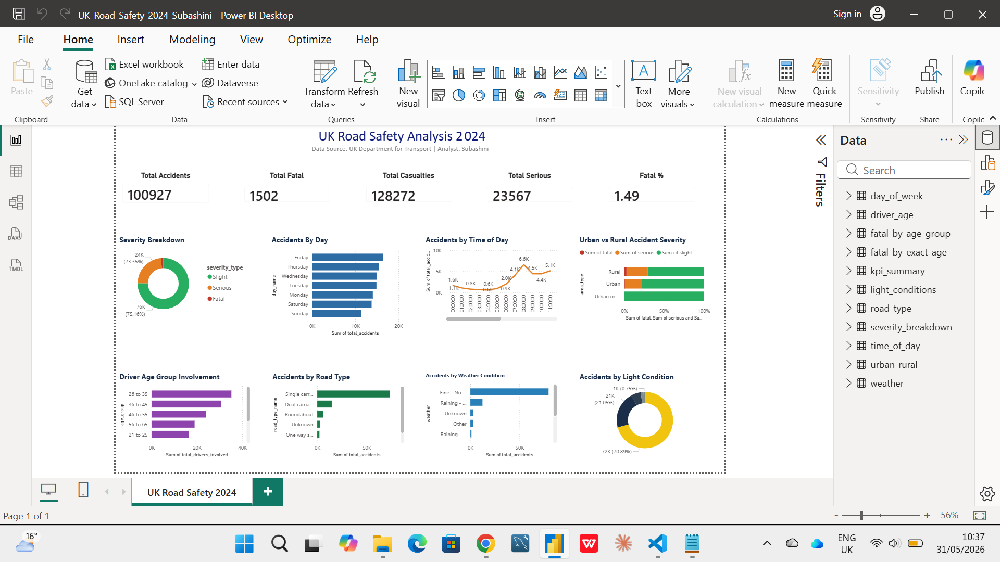

UK Road Safety 2024 — Interactive Analytics Dashboard
Interactive Power BI dashboard built from 11 CSV files exported from SQL analysis. Dashboard features 5 KPI cards and 8 interactive charts covering all key dimensions of UK road safety data for 2024.

Total accidents, fatalities, casualties, serious injuries and fatal percentage
Fatal, Serious and Slight breakdown with percentages
Accidents by day showing Friday as most dangerous
Hourly accident pattern showing rush hour peaks
Severity comparison between urban and rural areas
Age group involvement with fatal accident overlay
Accident count by road type — single carriageway highest
Conditions impact on accident severity and frequency